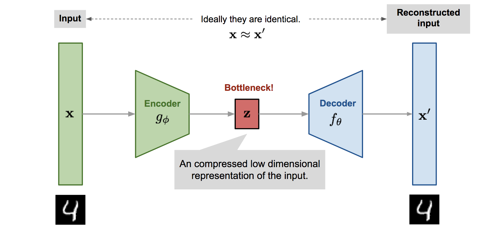
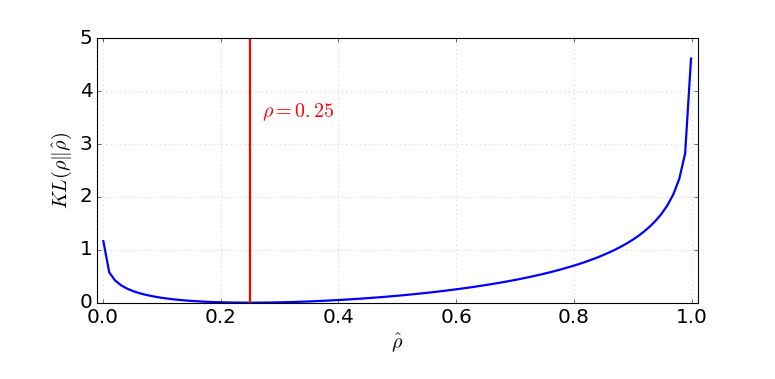
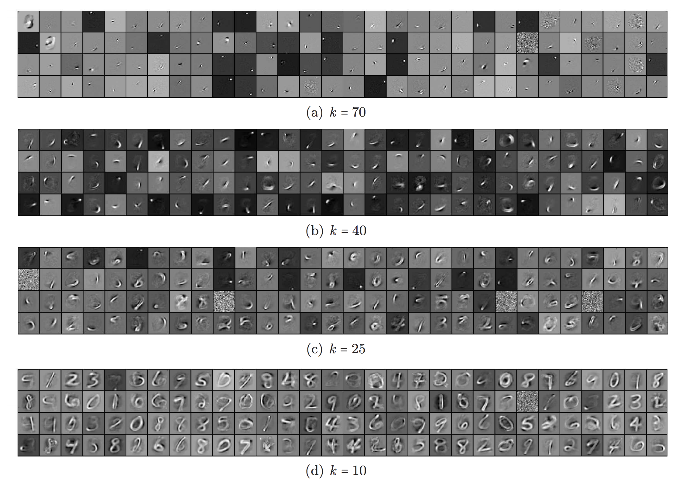
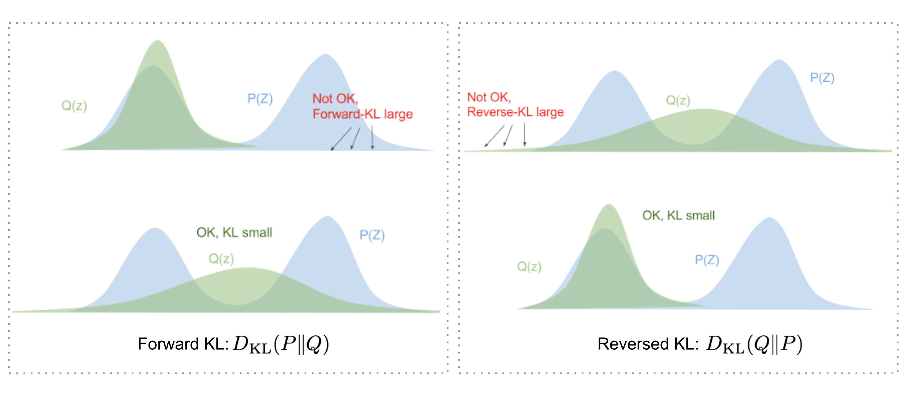
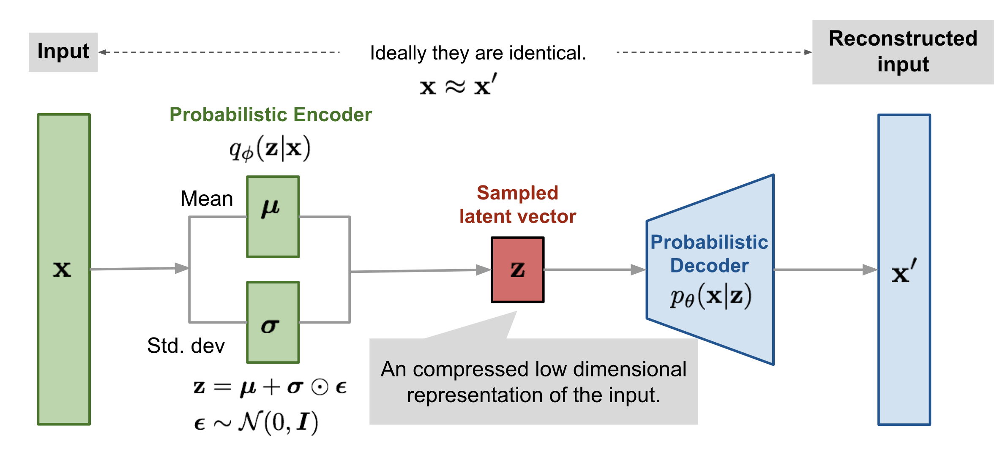
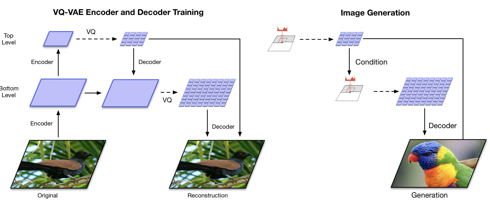
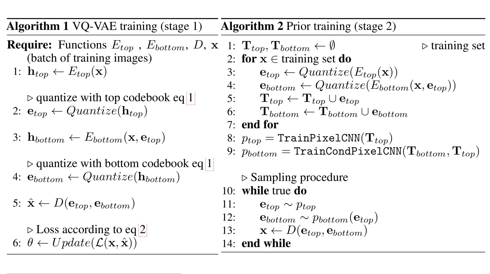
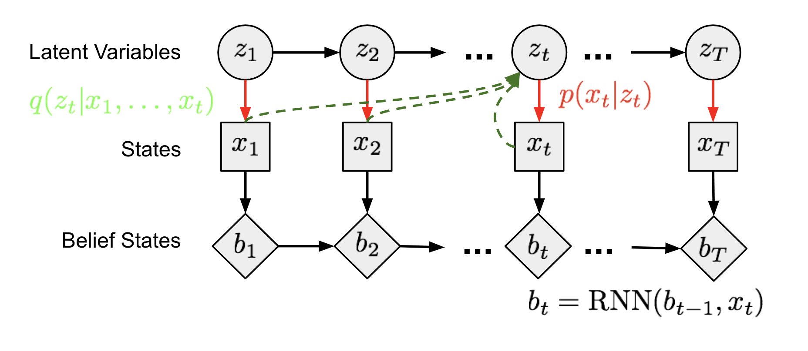
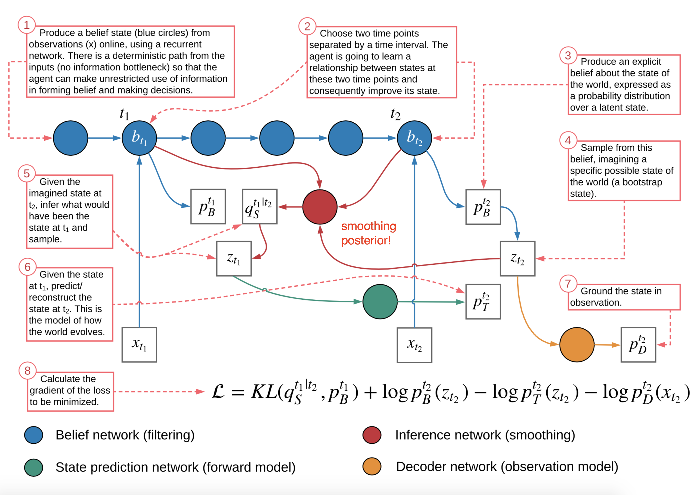

目录
- Notation
- Autoencoder
- Denoising Autoencoder
- Sparse Autoencoder
- Contractive Autoencoder
- VAE: Variational Autoencoder Loss Function: ELBO Reparameterization Trick
- Beta-VAE
- VQ-VAE and VQ-VAE-2
- TD-VAE
- References
[2019-07-18 更新：新增 VQ-VAE 与 VQ-VAE-2 章节。] [2019-07-26 更新：新增 TD-VAE 章节。]
自编码器（Autoencoder）最初被设计用于通过一个中间带有窄瓶颈层的神经网络来重构高维数据（不过对于变分自编码器来说这个说法可能不完全准确，我们会在后续章节详细讨论）。它的一个重要副产品是降维：瓶颈层能够捕捉到压缩后的潜在编码。这种低维表示可以作为各种应用中的嵌入向量（如搜索），帮助数据压缩，或揭示数据背后的生成因素。
符号说明
| Symbol | Mean |
|---|---|
| \mathcal{D} | The dataset, \mathcal{D} = \{ \mathbf{x}^{(1)}, \mathbf{x}^{(2)}, \dots, \mathbf{x}^{(n)} \}, contains n data samples; \vert\mathcal{D}\vert =n . |
| \mathbf{x}^{(i)} | Each data point is a vector of d dimensions, \mathbf{x}^{(i)} = [x^{(i)}_1, x^{(i)}_2, \dots, x^{(i)}_d]. |
| \mathbf{x} | One data sample from the dataset, \mathbf{x} \in \mathcal{D}. |
| \mathbf{x}’ | The reconstructed version of \mathbf{x}. |
| \tilde{\mathbf{x}} | The corrupted version of \mathbf{x}. |
| \mathbf{z} | The compressed code learned in the bottleneck layer. |
| a_j^{(l)} | The activation function for the j-th neuron in the l-th hidden layer. |
| g_{\phi}(.) | The encoding function parameterized by \phi. |
| f_{\theta}(.) | The decoding function parameterized by \theta. |
| q_{\phi}(\mathbf{z}\vert\mathbf{x}) | Estimated posterior probability function, also known as probabilistic encoder. |
| p_{\theta}(\mathbf{x}\vert\mathbf{z}) | Likelihood of generating true data sample given the latent code, also known as probabilistic decoder. |
自编码器
自编码器是一种以无监督方式学习恒等函数的神经网络，它在重构原始输入的同时对数据进行压缩，从而发现更高效、压缩性更强的表示。该想法起源于20世纪80年代，后来被Hinton & Salakhutdinov, 2006的开创性论文进一步推广。
它由两个网络组成：
- 编码器网络：将原始高维输入转换为低维潜在编码。输入维度大于输出维度。
- 解码器网络：解码器从编码中恢复数据，通常使用逐渐增大的输出层。

编码器网络本质上完成了降维任务，类似于我们使用主成分分析（PCA）或矩阵分解（MF）所做的工作。此外，自编码器被明确优化为从编码中重构数据。一个好的中间表示不仅能捕捉潜在变量，还能让整个解压缩过程更加高效。
模型包含一个由\phi参数化的编码器函数g(.)，以及一个由\theta参数化的解码器函数f(.)。在瓶颈层为输入\mathbf{x}学习到的低维编码记为\mathbf{z} = g_\phi(\mathbf{x})，重构后的输入记为\mathbf{x}’ = f_\theta(g_\phi(\mathbf{x}))。
参数(\theta, \phi)被联合训练，以输出与原始输入\mathbf{x} \approx f_\theta(g_\phi(\mathbf{x}))相同的重构样本，换句话说，就是学习一个恒等函数。衡量两个向量差异的方法有很多，例如当激活函数为 sigmoid 时使用交叉熵，或者简单地使用 MSE 损失：
去噪自编码器
由于自编码器学习的是恒等函数，当网络参数数量多于数据点数量时，我们会面临“过拟合”的风险。
为了避免过拟合并提升鲁棒性，去噪自编码器（Denoising Autoencoder，Vincent et al. 2008）对基础自编码器进行了改进。以随机方式对输入向量添加噪声或掩蔽部分数值，从而得到部分损坏的输入\tilde{\mathbf{x}} \sim \mathcal{M}_\mathcal{D}(\tilde{\mathbf{x}} \vert \mathbf{x})。然后模型被训练来恢复原始输入（注意：不是损坏后的输入）。
其中\mathcal{M}_\mathcal{D}定义了从真实数据样本到噪声或损坏样本的映射。

这种设计受到人类认知能力的启发：即使物体或场景部分被遮挡或损坏，人类仍然能轻松识别。为了“修复”部分受损的输入，去噪自编码器必须发现并捕捉输入各维度之间的关系，从而推断缺失的部分。
对于具有高冗余的高维输入（如图像），模型更可能依赖多个输入维度组合收集的证据来恢复去噪版本，而不是过拟合单个维度。这为学习鲁棒的潜在表示奠定了良好基础。
噪声由随机映射\mathcal{M}_\mathcal{D}(\tilde{\mathbf{x}} \vert \mathbf{x})控制，并且不局限于特定类型的损坏过程（如掩蔽噪声、高斯噪声、椒盐噪声等）。当然，损坏过程也可以融入先验知识。
在原始 DAE 论文的实验中，噪声的施加方式是：随机选择固定比例的输入维度，并将其值强制设为 0。这听起来很像 Dropout，对吧？其实去噪自编码器提出于 2008 年，比 Dropout 论文（Hinton, et al. 2012）早了四年 ;)
稀疏自编码器
稀疏自编码器对隐藏单元的激活施加“稀疏”约束，以避免过拟合并提升鲁棒性。它迫使模型在同一时刻只有少量隐藏单元被激活，换句话说，一个隐藏神经元大部分时间应该处于非激活状态。
常见的激活函数包括 sigmoid、tanh、ReLU、Leaky ReLU 等。当取值接近 1 时神经元被激活，接近 0 时则处于非激活状态。
假设第l个隐藏层有s_l个神经元，该层第j个神经元的激活函数记为a^{(l)}_j(.)，即j=1, \dots, s_l。该神经元的平均激活率\hat{\rho}_j被期望是一个很小的数\rho，称为稀疏参数；常用的设置为\rho = 0.05。
该约束通过在损失函数中增加一个惩罚项来实现。KL 散度D_\text{KL}用于衡量两个伯努利分布之间的差异，一个的均值为\rho，另一个的均值为\hat{\rho}_j^{(l)}。超参数\beta控制我们对稀疏损失施加的惩罚强度。

k-稀疏自编码器k
在k-Sparse Autoencoder（Makhzani and Frey, 2013）中，稀疏性通过在瓶颈层仅保留最高的前 k 个激活值来强制实现，使用的是线性激活函数。 首先通过编码器网络进行前向传播得到压缩编码：\mathbf{z} = g(\mathbf{x})。 对编码向量\mathbf{z}中的值进行排序，仅保留最大的 k 个值，其余神经元置为 0。这也可以通过一个可调节阈值的 ReLU 层实现。此时我们得到稀疏化后的编码：\mathbf{z}’ = \text{Sparsify}(\mathbf{z})。 基于稀疏化后的编码计算输出和损失：L = |\mathbf{x} - f(\mathbf{z}’) |_2^2。 反向传播仅通过前 k 个被激活的隐藏单元进行！

收缩自编码器
与稀疏自编码器类似，收缩自编码器（Contractive Autoencoder，Rifai, et al, 2011）通过鼓励学习到的表示处于收缩空间来提升鲁棒性。
它在损失函数中增加一项，惩罚表示对输入过于敏感，从而提高对训练数据点附近微小扰动的鲁棒性。敏感度通过编码器激活关于输入的雅可比矩阵的 Frobenius 范数来衡量：
其中h_j是压缩编码\mathbf{z} = f(x)中的一个单元输出。
该惩罚项是学习到的编码关于输入各维度所有偏导数的平方和。作者指出，从经验上看，这一惩罚项会雕琢出一个对应于低维非线性流形的表示，同时对流形正交的大多数方向保持更高的不变性。
VAE：变分自编码器
变分自编码器（Variational Autoencoder，Kingma & Welling, 2014，简称 VAE）的思想与其他自编码器模型并不完全相似，它深深植根于变分贝叶斯方法和图模型。
我们不再将输入映射为一个固定向量，而是映射为一个分布。记该分布为p_\theta，由\theta参数化。数据输入\mathbf{x}与潜在编码向量\mathbf{z}之间的关系可完整定义为：
- 先验 p_\theta(\mathbf{z})
- 似然 p_\theta(\mathbf{x}\vert\mathbf{z})
- 后验 p_\theta(\mathbf{z}\vert\mathbf{x})
假设我们知道该分布的真实参数\theta^{*}。为了生成一个看起来像真实数据点\mathbf{x}^{(i)}的样本，我们按以下步骤进行：
- 首先，从先验分布p_{\theta^*}(\mathbf{z})中采样一个\mathbf{z}^{(i)}。
- 然后从条件分布p_{\theta^*}(\mathbf{x} \vert \mathbf{z} = \mathbf{z}^{(i)})中生成一个值\mathbf{x}^{(i)}。
最优参数\theta^{*}是能最大化生成真实数据样本概率的参数：
通常我们使用对数概率将右侧的连乘转化为求和：
现在我们更新方程，以便更好地展示数据生成过程并引入编码向量：
不幸的是，以这种方式计算p_\theta(\mathbf{x}^{(i)})并不容易，因为检查\mathbf{z}所有可能取值并求和的代价非常高。为了缩小取值空间从而加速搜索，我们引入一个新的近似函数来输出给定输入\mathbf{x}时可能的编码，该函数记为q_\phi(\mathbf{z}\vert\mathbf{x})，由\phi参数化。

现在的结构看起来非常像自编码器：
- 条件概率p_\theta(\mathbf{x} \vert \mathbf{z})定义了一个生成模型，类似于前面介绍的解码器f_\theta(\mathbf{x} \vert \mathbf{z})。p_\theta(\mathbf{x} \vert \mathbf{z})也被称为概率解码器。
- 近似函数q_\phi(\mathbf{z} \vert \mathbf{x})是概率编码器，扮演着与前面g_\phi(\mathbf{z} \vert \mathbf{x})类似的角色。
损失函数：ELBO
估计的后验q_\phi(\mathbf{z}\vert\mathbf{x})应该非常接近真实的后验p_\theta(\mathbf{z}\vert\mathbf{x})。我们可以使用Kullback-Leibler 散度来量化这两个分布之间的距离。KL 散度D_\text{KL}(X|Y)衡量的是用分布 Y 来表示 X 时丢失了多少信息。
在我们的场景中，我们希望关于\phi最小化D_\text{KL}( q_\phi(\mathbf{z}\vert\mathbf{x}) | p_\theta(\mathbf{z}\vert\mathbf{x}) )。
但为什么要使用D_\text{KL}(q_\phi | p_\theta)（反向 KL）而不是D_\text{KL}(p_\theta | q_\phi)（前向 KL）呢？Eric Jang 在他关于贝叶斯变分方法的文章中给出了精彩解释。简单回顾如下：

- 前向 KL 散度：D_\text{KL}(P|Q) = \mathbb{E}_{z\sim P(z)} \log\frac{P(z)}{Q(z)}；我们必须确保只要 P(z)>0，Q(z) 就大于 0。优化后的变分分布q(z)必须覆盖整个p(z)。
- 反向 KL 散度：D_\text{KL}(Q|P) = \mathbb{E}_{z\sim Q(z)} \log\frac{Q(z)}{P(z)}；最小化反向 KL 散度会将Q(z)压缩到P(z)之下。
现在我们展开方程：
因此我们有：
将方程左右两边重新整理后，
方程左边正是我们在学习真实分布时希望最大化的目标：我们希望最大化生成真实数据的（对数）似然（即\log p_\theta(\mathbf{x})），同时最小化真实后验与估计后验之间的差异（D_\text{KL}项起到正则化器的作用）。注意p_\theta(\mathbf{x})相对于q_\phi是固定的。
上述表达式的相反数定义了我们的损失函数：
在变分贝叶斯方法中，这个损失函数被称为变分下界，或证据下界（ELBO）。名称中的“下界”是因为 KL 散度始终非负，因此-L_\text{VAE}是\log p_\theta (\mathbf{x})的下界。
因此，通过最小化损失，我们实际上是在最大化生成真实数据样本概率的下界。
重参数化技巧
损失函数中的期望项需要从\mathbf{z} \sim q_\phi(\mathbf{z}\vert\mathbf{x})中采样。采样是一个随机过程，因此无法直接反向传播梯度。为了使其可训练，引入了重参数化技巧：通常可以将随机变量\mathbf{z}表示为一个确定性变量\mathbf{z} = \mathcal{T}_\phi(\mathbf{x}, \boldsymbol{\epsilon})，其中\boldsymbol{\epsilon}是一个独立的辅助随机变量，而变换函数\mathcal{T}_\phi（由\phi参数化）将\boldsymbol{\epsilon}转换为\mathbf{z}。
例如，对q_\phi(\mathbf{z}\vert\mathbf{x})的一种常见选择是具有对角协方差结构的多元高斯分布：
其中\odot表示逐元素乘积。

重参数化技巧也适用于其他类型的分布，并不局限于高斯分布。 在多元高斯情况下，我们通过显式学习分布的均值和方差（\mu 和 \sigma）并使用重参数化技巧使模型可训练，而随机性则保留在随机变量\boldsymbol{\epsilon} \sim \mathcal{N}(0, \boldsymbol{I})中。

Beta-VAE
如果推断出的潜在表示\mathbf{z}中的每个变量只对单一生成因子敏感，而对其他因子相对不变，我们称这种表示是解耦的（disentangled）或因子化的。解耦表示通常带来的好处是良好的可解释性和对各种任务的轻松泛化能力。
例如，一个在人脸照片上训练的模型可能会将肤色、发色、发长、表情、是否戴眼镜等相对独立的因子分别捕捉到不同的维度中。这种解耦表示对人脸图像生成非常有益。
β-VAE（Higgins et al., 2017）是对变分自编码器的改进，它特别强调发现解耦的潜在因子。遵循 VAE 的相同目标，我们希望在保持真实后验与估计后验之间距离较小（例如小于一个较小的常数\delta）的同时，最大化生成真实数据的概率：
我们可以将其重写为带拉格朗日乘子\beta的拉格朗日形式，并在KKT 条件下处理。上述仅含一个不等式约束的优化问题等价于最大化以下方程\mathcal{F}(\theta, \phi, \beta)：
\beta-VAE 的损失函数定义为：
其中拉格朗日乘子\beta被视为一个超参数。
由于L_\text{BETA}(\phi, \beta)的相反数是拉格朗日\mathcal{F}(\theta, \phi, \beta)的下界。最小化该损失等价于最大化拉格朗日，因此也适用于我们最初的优化问题。
当\beta=1时，它等同于普通 VAE。当\beta > 1时，它对潜在瓶颈施加更强的约束，限制了\mathbf{z}的表示能力。对于某些条件独立的生成因子，保持它们解耦是最有效的表示。因此更大的\beta会鼓励更高效的潜在编码，进一步促进解耦。与此同时，较大的\beta可能会在重构质量和解耦程度之间产生权衡。
Burgess, et al. (2017) 受到的启发，深入讨论了\beta-VAE 中的解耦问题，并进一步提出对\beta-VAE 的改进，以更好地控制编码的表示能力。用信息论剖析深度学习
VQ-VAE 和 VQ-VAE-2
VQ-VAE（“Vector Quantised-Variational AutoEncoder”；van den Oord, et al. 2017）模型通过编码器学习离散的潜在变量，因为离散表示对于语言、语音、推理等问题可能更为自然。
向量量化（Vector Quantisation，VQ）是一种将K维向量映射到有限“码本”向量集合的方法。该过程与KNN算法非常相似。样本应映射到的最优质心码向量是欧氏距离最小的那个。
设\mathbf{e} \in \mathbb{R}^{K \times D}, i=1, \dots, K为 VQ-VAE 中的潜在嵌入空间（也称为“码本”），其中K是潜在变量类别的数量，D是嵌入维度。单个嵌入向量记为\mathbf{e}_i \in \mathbb{R}^{D}, i=1, \dots, K。
编码器输出E(\mathbf{x}) = \mathbf{z}_e经过最近邻查找，匹配到K个嵌入向量之一，然后将匹配到的码向量作为解码器D(.)的输入：
注意，离散潜在变量在不同应用中可以具有不同形状，例如语音用 1D，图像用 2D，视频用 3D。

由于 argmin() 在离散空间上不可微，来自解码器输入\mathbf{z}_q的梯度\nabla_z L会被拷贝到编码器输出\mathbf{z}_e。除了重构损失外，VQ-VAE 还优化以下两项：
- VQ 损失：嵌入空间与编码器输出之间的 L2 误差。
- 承诺损失：鼓励编码器输出靠近嵌入空间，防止它在不同码向量之间过于频繁波动。
其中\text{sg}[.]是 stop_gradient 算子。
码本中的嵌入向量通过 EMA（指数移动平均）进行更新。给定一个码向量\mathbf{e}_i，假设有n_i个编码器输出向量\{\mathbf{z}_{i,j}\}_{j=1}^{n_i}被量化到\mathbf{e}_i：
其中(t)指批次序列在时间上的索引。N_i和\mathbf{m}_i分别表示累积的向量计数和体积。
VQ-VAE-2（Ali Razavi, et al. 2019）是一个两层层次化的 VQ-VAE，并结合了自注意力自回归模型。
- 第一阶段训练一个层次化的 VQ-VAE：层次化潜在变量的设计旨在将局部模式（例如纹理）与全局信息（例如物体形状）分开。较大底层码本的训练也依赖于较小顶层码本，因此不需要从零开始学习所有内容。
- 第二阶段学习离散码本上的先验，以便从中采样并生成图像。这样，解码器就能接收到与训练时相似分布的输入向量。使用带有多头自注意力层的强大自回归模型来捕捉先验分布（例如PixelSNAIL; Chen et al 2017）。
考虑到 VQ-VAE-2 依赖于以简单层次结构配置的离散潜在变量，其生成的图像质量令人惊叹。


TD-VAE
TD-VAE（“Temporal Difference VAE”；Gregor et al., 2019）用于处理序列数据。它依赖于下面介绍的三个主要思想。

1. 状态空间模型 在（潜在）状态空间模型中，一系列未被观测的隐藏状态\mathbf{z} = (z_1, \dots, z_T)决定了观测状态\mathbf{x} = (x_1, \dots, x_T)。图 13 中马尔可夫链的每个时间步都可以用类似于图 6 的方式进行训练，其中不可 tractable 的后验p(z \vert x)由函数q(z \vert x)近似。
2. 信念状态 一个智能体应该学会对所有过去的状态进行编码以推理未来，这被称为信念状态，记为b_t = belief(x_1, \dots, x_t) = belief(b_{t-1}, x_t)。据此，未来状态以过去状态为条件的分布可写为p(x_{t+1}, \dots, x_T \vert x_1, \dots, x_t) \approx p(x_{t+1}, \dots, x_T \vert b_t)。TD-VAE 中循环策略的隐藏状态被用作智能体的信念状态。因此我们有b_t = \text{RNN}(b_{t-1}, x_t)。
3. 跳跃预测 进一步地，智能体应能够基于目前收集到的所有信息来想象遥远的未来，这意味着它具备进行跳跃预测的能力，即预测未来若干步之后的状态。
回顾我们之前学到的变分下界：
现在我们将状态x_t的分布建模为以所有过去状态x_{<t}以及当前时间步和前一时间步的两个潜在变量z_t、z_{t-1}为条件的概率函数：
继续展开方程：
注意以下两点：
- 根据马尔可夫假设，红色项可以忽略。
- 蓝色项根据马尔可夫假设展开。
- 绿色项被展开，包含一个回到过去的一步预测，作为平滑分布。
准确来说，我们需要学习四种类型的分布：
- p_D(.)是解码器分布：
- p(x_t \mid z_t)是按常规定义的编码器；
- p(x_t \mid z_t) \to p_D(x_t \mid z_t)；
- p_T(.)是转移分布：
- p(z_t \mid z_{t-1})捕捉潜在变量之间的序列依赖关系；
- p(z_t \mid z_{t-1}) \to p_T(z_t \mid z_{t-1})；
- p_B(.)是信念分布：
- p(z_{t-1} \mid x_{<t})和q(z_t \mid x_{\leq t})都可以使用信念状态来预测潜在变量；
- p(z_{t-1} \mid x_{<t}) \to p_B(z_{t-1} \mid b_{t-1})；
- q(z_{t} \mid x_{\leq t}) \to p_B(z_t \mid b_t)；
- p_S(.)是平滑分布：
- 返回过去的平滑项q(z_{t-1} \mid z_t, x_{\leq t})也可以改写为依赖于信念状态的形式；
- q(z_{t-1} \mid z_t, x_{\leq t}) \to p_S(z_{t-1} \mid z_t, b_{t-1}, b_t)；
为了融入跳跃预测的思想，序列 ELBO 不仅要对t, t+1起作用，还需要对两个相距较远的时间戳t_1 < t_2起作用。下面是最终需要最大化的 TD-VAE 目标函数：

引用格式：
@article{weng2018VAE,
title = "From Autoencoder to Beta-VAE",
author = "Weng, Lilian",
journal = "lilianweng.github.io",
year = "2018",
url = "https://lilianweng.github.io/posts/2018-08-12-vae/"
}
参考文献
[1] Geoffrey E. Hinton, and Ruslan R. Salakhutdinov. “Reducing the dimensionality of data with neural networks.” Science 313.5786 (2006): 504-507.
[2] Pascal Vincent, et al. “Extracting and composing robust features with denoising autoencoders.” ICML, 2008.
[3] Pascal Vincent, et al. “Stacked denoising autoencoders: Learning useful representations in a deep network with a local denoising criterion.”. Journal of machine learning research 11.Dec (2010): 3371-3408.
[4] Geoffrey E. Hinton, Nitish Srivastava, Alex Krizhevsky, Ilya Sutskever, and Ruslan R. Salakhutdinov. “Improving neural networks by preventing co-adaptation of feature detectors.” arXiv preprint arXiv:1207.0580 (2012).
[5] Sparse Autoencoder by Andrew Ng.
[6] Alireza Makhzani, Brendan Frey (2013). “k-sparse autoencoder”. ICLR 2014.
[7] Salah Rifai, et al. “Contractive auto-encoders: Explicit invariance during feature extraction.” ICML, 2011.
[8] Diederik P. Kingma, and Max Welling. “Auto-encoding variational bayes.” ICLR 2014.
[9] Tutorial - What is a variational autoencoder? on jaan.io
[10] Youtube tutorial: Variational Autoencoders by Arxiv Insights
[11] “A Beginner’s Guide to Variational Methods: Mean-Field Approximation” by Eric Jang.
[12] Carl Doersch. “Tutorial on variational autoencoders.” arXiv:1606.05908, 2016.
[13] Irina Higgins, et al. "\beta-VAE: Learning basic visual concepts with a constrained variational framework." ICLR 2017.
[14] Christopher P. Burgess, et al. “Understanding disentangling in beta-VAE.” NIPS 2017.
[15] Aaron van den Oord, et al. “Neural Discrete Representation Learning” NIPS 2017.
[16] Ali Razavi, et al. “Generating Diverse High-Fidelity Images with VQ-VAE-2”. arXiv preprint arXiv:1906.00446 (2019).
[17] Xi Chen, et al. “PixelSNAIL: An Improved Autoregressive Generative Model.” arXiv preprint arXiv:1712.09763 (2017).
[18] Karol Gregor, et al. “Temporal Difference Variational Auto-Encoder.” ICLR 2019.